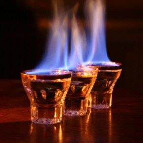

To successfully prepare this drink, add both the amaretto and rum to a shot glass with the rum on top, set the rum on fire, and drop the shot glass into the 1/2 pint of beer.
Ingredients:
The combination of these ingredients when lit on fire is what makes it taste like a Dr. Pepper!